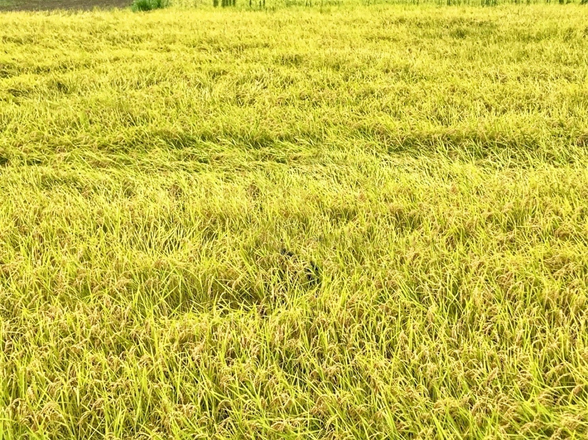
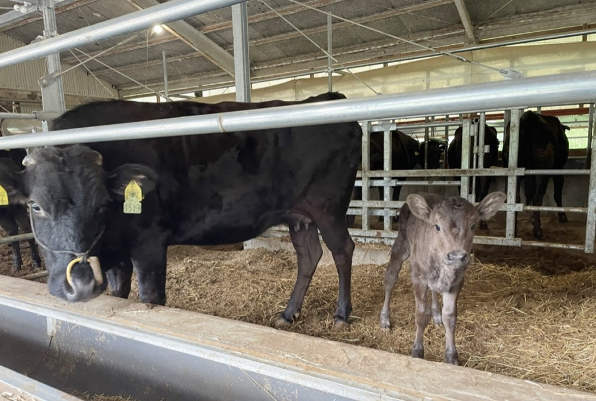
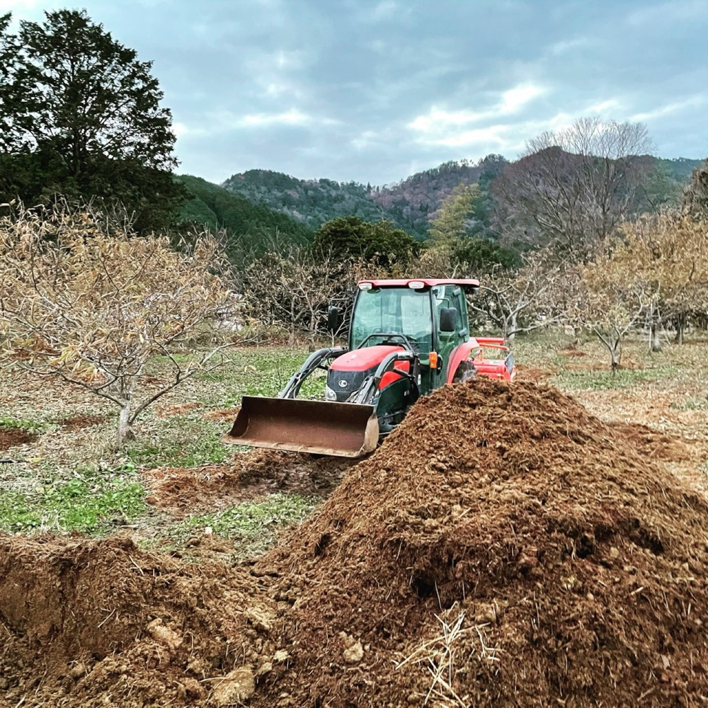
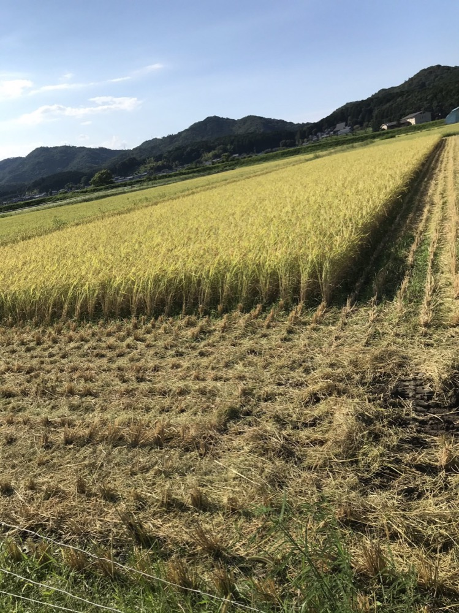
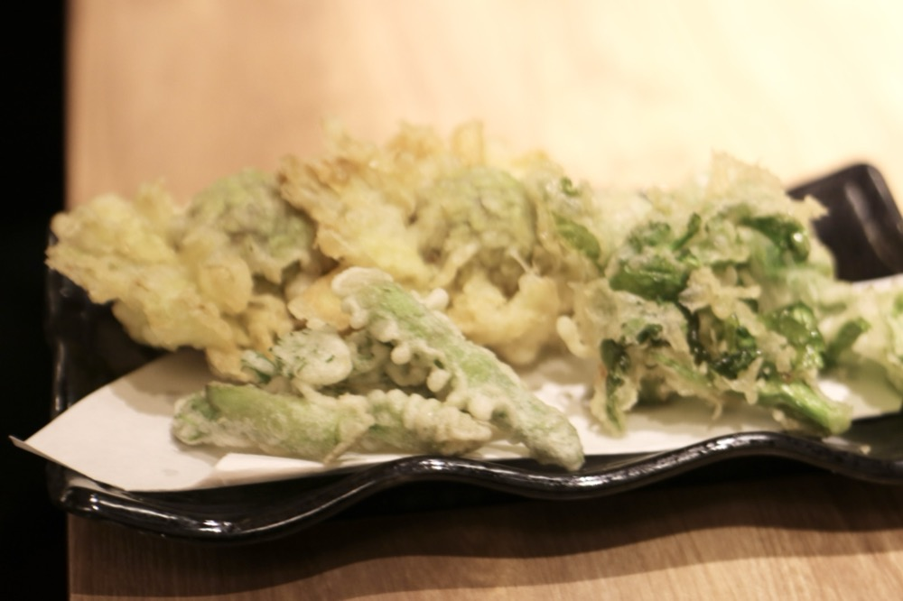
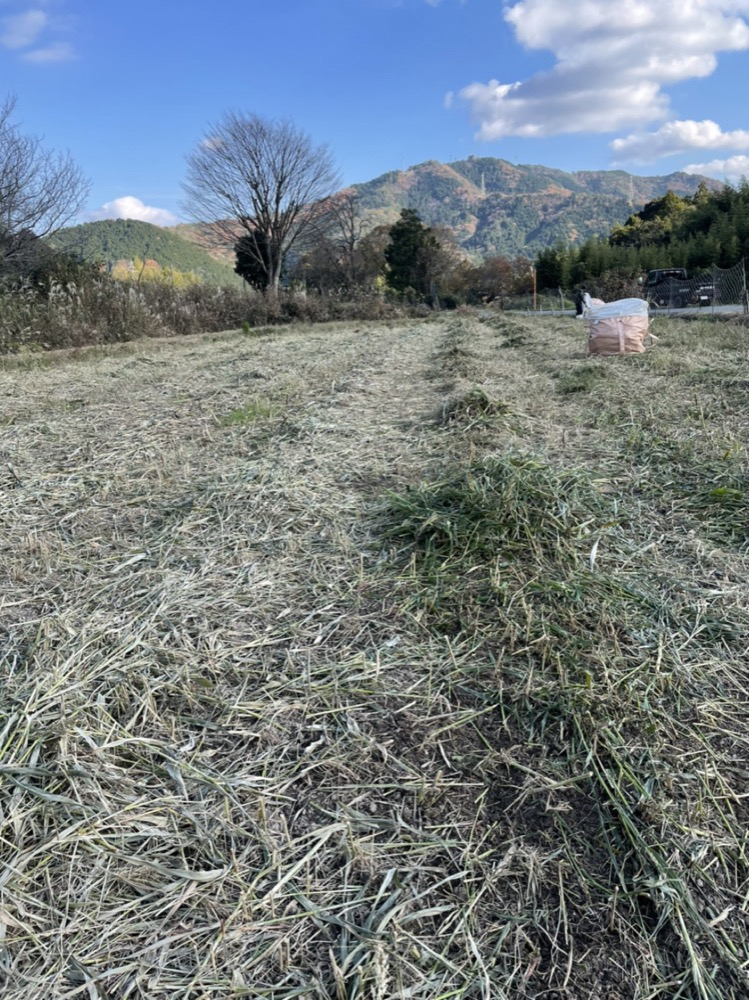
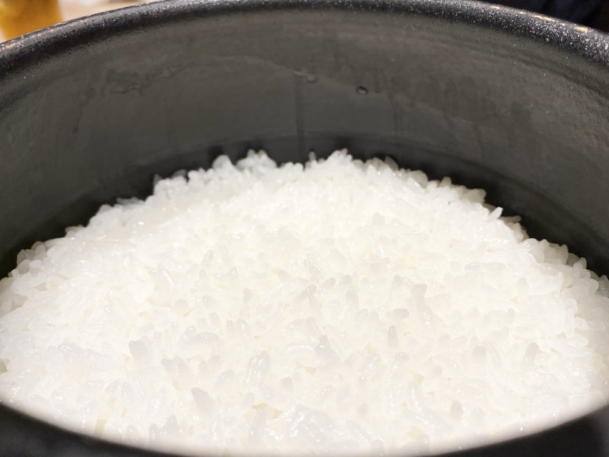
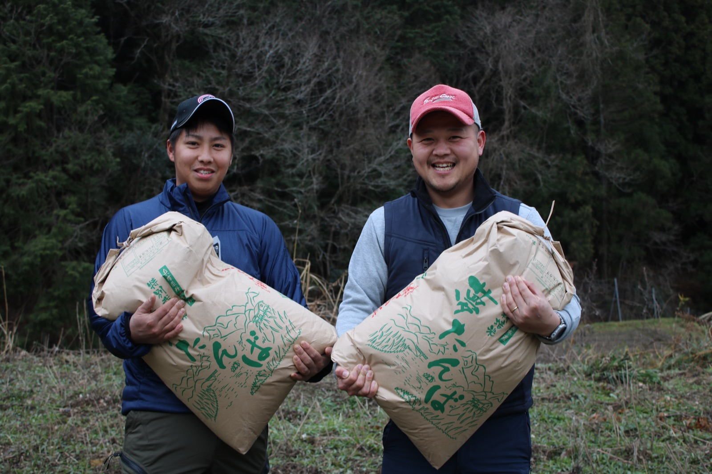

丹波の食材を全国、そして世界へ
耕作放棄地で牧草を育て、牛が食べる。
牛の堆肥で米や栗を育て、自分たちの飲食店で使う。
丹波市市島町で、ひとつの流れとして農業に取り組んでいます。
 01
01
耕作放棄地を耕し、牛が食べる牧草を自分たちで作ります。

02牧草を食べて育つ但馬牛。仔牛はなるべく親牛の乳で育てます。

03牛舎から出る牛ふんを堆肥舎で堆肥にし、田畑へ運びます。

04牛の堆肥を使い、農薬や化学肥料の使用を控えて育てます。

05育てたお米を、グループの飲食店でお客様にお出しします。
↻堆肥は毎年田畑へ戻り、次の作物を育てます。
2019年設立。但馬牛の繁殖と、米・野菜・丹波栗の生産、食品加工、ワイン醸造を手がけています。

丹波産コシヒカリ。丹波は年平均気温が東北と同じくらいで、昼夜の寒暖差が甘みを生みます。但馬牛の堆肥を使い、農薬や化学肥料の使用を控えて育てています。

自社の食品加工場で、丹波栗の渋皮煮などの加工品をつくっています。
2024年、ワイン醸造を始めました。「TAMBA FARMER'S WINERY」として丹波でワインをつくっています。
丹波農商のグループ会社

丹波農商が出資して設立した会社です。耕作放棄地を耕し、2024年から牧草づくりを始めました。
丹波農商の牛が食べる牧草をつくるだけでなく、国産の牧草を多くの農家の方に使っていただくことを目標にしています。

丹波農商は、大阪・東京で飲食店を営む株式会社アゲルの関連会社として2019年に生まれました。
アゲルは「天ぷらとワイン 大塩」「和食 大塩」「たこ焼き酒場なにわ」を展開しています。牛の堆肥で育てたお米を、自分たちの店で使う。つくる人と料理する人が同じグループにいることが、私たちの循環型農業の出口です。
丹波産コシヒカリ・丹波栗・牛ふん堆肥などを販売しています
丹波農商オンラインストア
高校卒業後、兄が運営する飲食店に入社。地元丹波に貢献したいと思い、家業の稲作を発展させ、但馬牛の繁殖と米・野菜の栽培を行う農業を志しました。高見牧場での3年間の修行を経て、2019年に独立。
大学卒業後、オフィス機器を扱う商社で営業を経験。自信を持って販売できるものを自分でつくりたいと、故郷の丹波市市島町で就農を決意。米農家での修行を経て独立し、2019年に大塩とともに会社を設立しました。